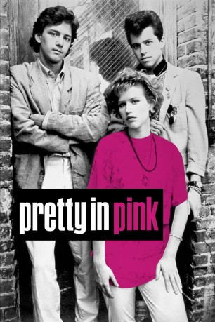
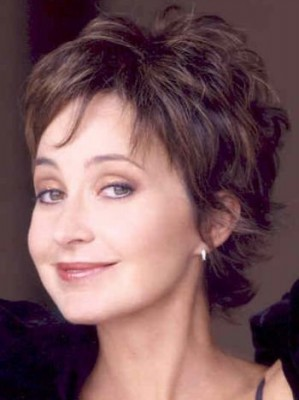

#5701 Pretty in Pink
 
 IMDB-Wertung: 6.7 / 10
IMDB-Wertung: 6.7 / 10  Tomatometer: 78
Tomatometer: 78  Metascore: 0
Metascore: 0 
Andie stammt aus kleinen Verhältnissen und geht auf eine Schule, wo fast nur Richies, wohlhabende Mitschüler, sind. Ihre Klamotten kauft sie im Second-Hand-Shop, und ihr Geld verdient sie in einem Plattenladen. Dort lernt sie den jungen Blane kennen, der sich Hals über Kopf in sie verliebt. Sehr zum Ärger von Duckie, einem ausgeflippten Typ mit Elvistolle, und ebenso arm wie Andie. Andie findet den reichen Blane umwerfend, der durch die Beziehung zur ihr bei seinen Freunden zum Außenseiter wird. Die beiden passen nirgendwo richtig hin: Auf den Parties der "Richies" fühlt Andie sich nicht wohl, und Blane wird in ihrer schmuddeligen Punk - Disco nicht akzeptiert. Ihr einziger wirklicher Freund ist ihr Vater Jack, der für das bevorstehende Schulfest ein pinkfarbenes Kleid kauft. Wenige Tage vor dem Ball läßt Blane Andie eiskalt abblitzen. Da zeigt Andie, daß sie es auch ohne die reichen Angeber schafft ...
Jahr: 1986
Dauer: 96 Minuten
FSK: 12
Land: USA Studio: Paramount PicturesTonspuren: DD2.0 - ,
Untertitel:
Auflösung: 1080p (1912x1080) Größe: 6912 MB
Genre: Drama, Komödie, Liebe
Regisseur: Howard Deutch
Drehbuch: Guillermo Ríos
Soundtrack:
Darsteller:
- Molly Ringwald als Andie
 Harry Dean Stanton als Jack
Harry Dean Stanton als Jack- Jon Cryer als Duckie
-  Annie Potts als Iona
 James Spader als Steff
James Spader als Steff Andrew McCarthy als Blane
Andrew McCarthy als Blane Jim Haynie als Donnelly
Jim Haynie als Donnelly- Alexa Kenin als Jena Hoeman
 Kate Vernon als Benny
Kate Vernon als Benny- Andrew Dice Clay als Bouncer
 Margaret Colin als English Teacher
Margaret Colin als English Teacher Gina Gershon als Girl Friend / Gym Class
Gina Gershon als Girl Friend / Gym Class- Christian Jacobs als Boy in Record Store
- Maggie Roswell als Mrs. Dietz
- Dweezil Zappa als Simon
- Kevin T. Williams als Talk Back
 Kristy Swanson als Duckette
Kristy Swanson als Duckette- William Winckler als Drunk Teen , uncredited
- Emily Longstreth als Kate
- Jamie Anders als Terrence
- Bader Howar als Sales Girl
- Audre Johnston als Benny's Mom
- Melanie Manos als Girl at Party
- Jimmie Podrasky als The Rave-Ups
- Tommy Blatnick als The Rave-Ups
- Timothy J. als The Rave-Ups
- Terry Wilson als The Rave-Ups
- Bruno Coon als Talk Back
- Jeffrey Hollie als Talk Back
- Kevin Ricard als Talk Back
- David Sutton als Talk Back
- Rock Deadrick als Talk Back
- Karen Laine als Girl at Prom
- Kevin D. Lindsay als Kevin
- Steve Sussman als Mall Patron , uncredited
Datei: X:\1986\Pretty in Pink (1986, FSK12, 1912x1080).mkv seit 10.03.2017
Festplatte: HD 1980-1986
 Es gibt insgesamt 50 Filme in der Gruppe '1986'
Es gibt insgesamt 50 Filme in der Gruppe '1986'